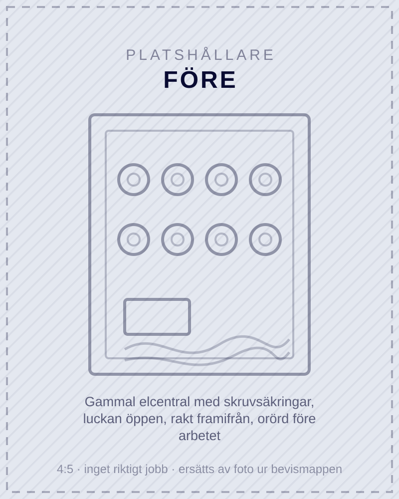
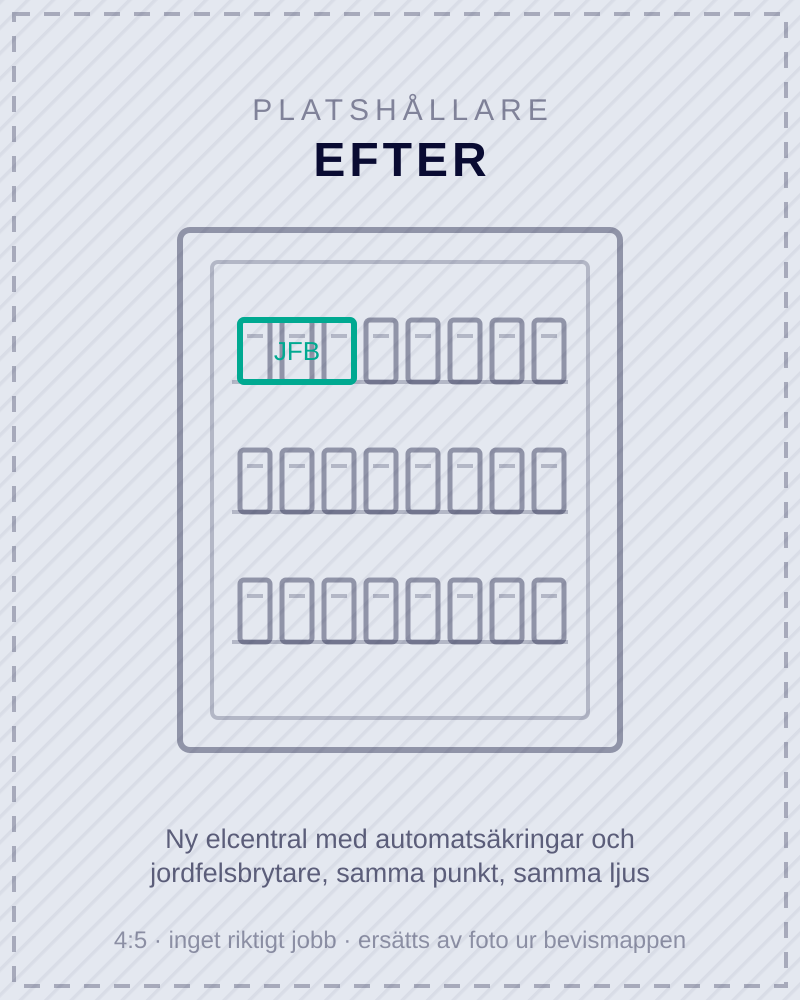
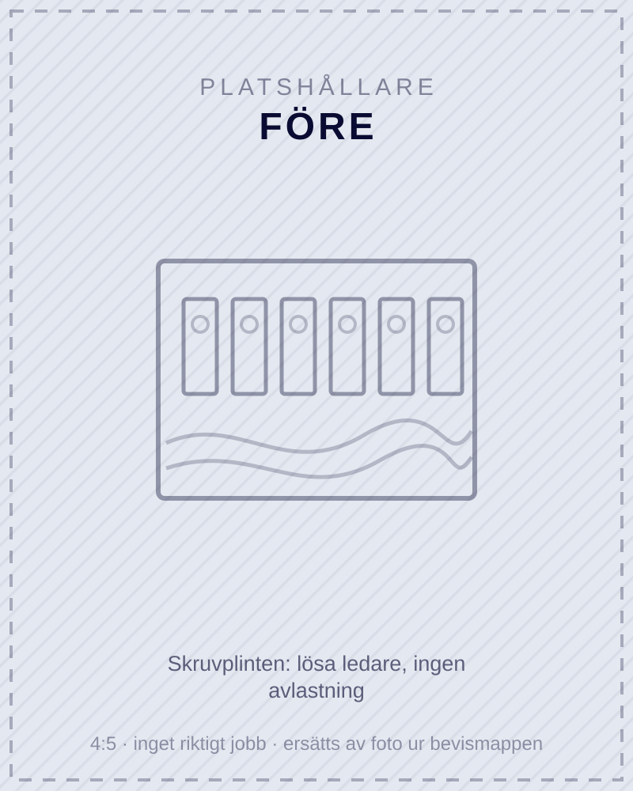
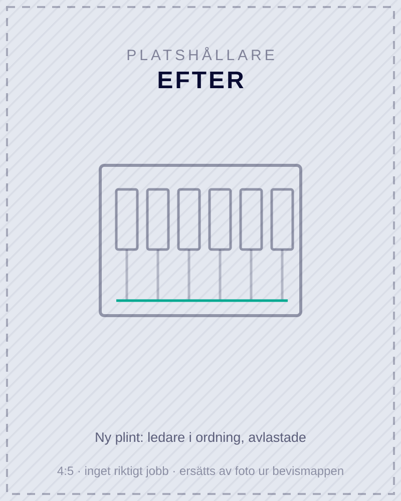
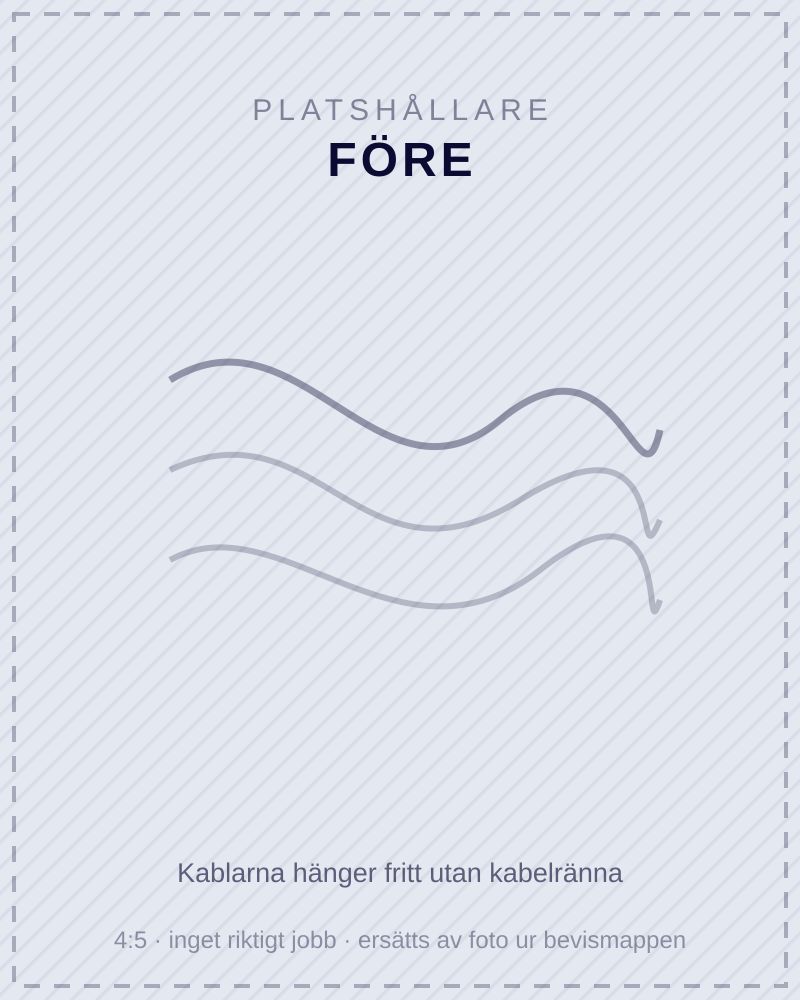
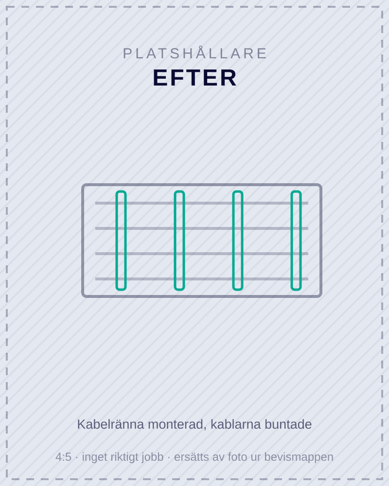
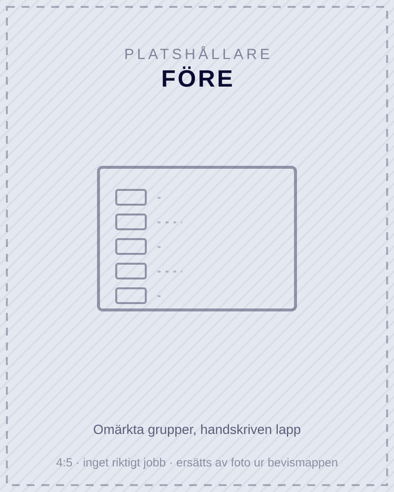
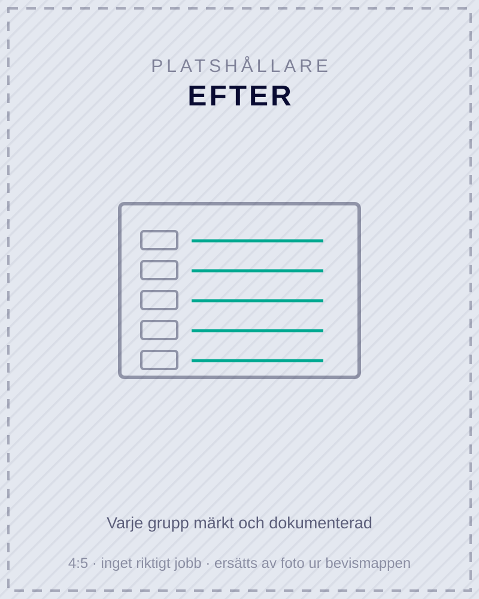

Så såg det ut före Skruvsäkringar från [årtal] och ingen jordfelsbrytare. Utan jordfelsbrytare kan ett jordfel bli stående utan att någon säkring löser ut.






Riktiga, oretuscherade bilder från våra jobb.